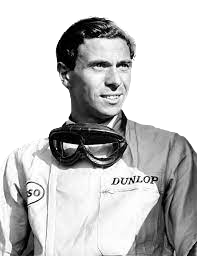

Lewis Hamilton
Lewis Hamilton
 Michael Schumacher
Michael Schumacher
 Juan Manuel Fangio
Juan Manuel Fangio Alain Prost
Alain Prost Sebastian Vettel
Sebastian Vettel
 Jack Brabham
Jack Brabham
 Jackie Stewart
Jackie Stewart
 Fernando Alonso
Fernando Alonso
 Graham Hill
Graham Hill Kimi Räikkönen
Kimi Räikkönen
|  | |
|---|---|
| Nationality | British |
| Date of Birth | 4 March 1936 - 7 April 1968 (aged 32) |
| Place of Birth | Kilmany, Fife, Scotland |
| Teams | Lotus |
| Height | 1.63m |
| Debut | 1960 Dutch Grand Prix(Lotus) |
| Championship | 1963, 1965 (2) |
| First Win | 1962 Belgian Grand Prix(Lotus) |
| Car Number | 3 |
| Wins | 25 |
| Podiums | 32 |
| Pole Positions | 33 |
| Front Row Starts | 48 |
| Fastest Laps | 28 |
| Grands Prix Entered | 73 |
| Points | 255 |
James Clark Jr.
Clark was a British Formula One racing driver from Scotland, who won two World Championships, in 1963 and 1965. A versatile driver, he competed in sports cars, touring cars and in the Indianapolis 500, which he won in 1965. He was particularly associated with the Lotus marque.
Clark was killed in a Formula Two racing accident in 1968 in Hockenheim, West Germany. At the time of his death, aged 32, he had won more Grand Prix races (25) and achieved more Grand Prix pole positions (33) than any other driver. In 2009, The Times placed Clark at the top of a list of the greatest-ever Formula One drivers.
The Perfect Match Of Man And Car
By modern standards, cars like Clark's Lotus 25 were not powerful cars. The car still had enormous speed, owed mainly to it's incredibly light weight and revolutionary aerodynamics for its day.
The aerodynamics, in particular, could be owed to its aluminum alloy monocoque chassis; a design inspired by aeronautical vehicles of the time. In 1963, it was this car that Clark won his first F1 championship with a record of seven out of ten first place victories.
The Tasman Series
In 1965, out of the 8 races in the series, Clark won 5 and easily won the championship by a tidy 11 points. It was his first season in the Tasman series but it wasn't to be his last. Clark raced another three times in 1966, 1967, and 1968, nearly winning the championship every year.
It was in 1966 that he came third due to another up-and-coming Scottish racing legend edging him out; it was Jackie Stewart's first season. Stewart and Clark battled for second and first place the following year, with Clark regaining the crown. Stewart would go on to win his first F1 championship a year after Clark's death.